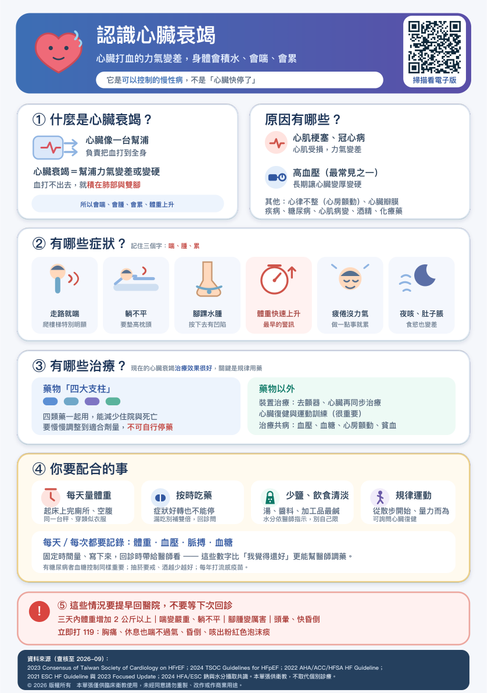

原因有哪些？
尚未播放
查看原始衛教圖卡

原稿來源與說明
資料來源（查核至 2026-09）：
2023 Consensus of Taiwan Society of Cardiology on HFrEF；2024 TSOC Guidelines for HFpEF；2022 AHA/ACC/HFSA HF Guideline；
2021 ESC HF Guideline 與 2023 Focused Update；2024 HFA/ESC 鈉與水分攝取共識。本單張供衛教，不取代個別診療。
© 2026 版權所有 本單張僅供臨床衛教使用，未經同意請勿重製、改作或作商業用途。